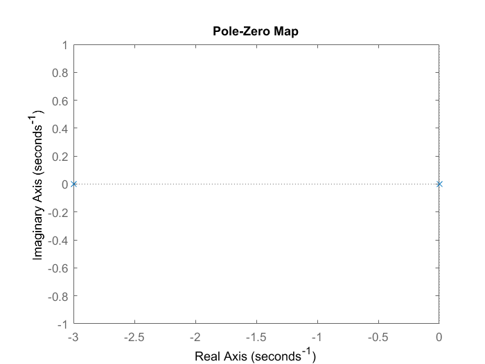

Contents
Nathaniel Goldfarb
HW2
clear all close all clc
Problem 1a
Problem 1a
G = tf( [200], [1,3,0])
G =
200
---------
s^2 + 3 s
Continuous-time transfer function.
pole(G)
ans =
0
-3
Problem 1b
pzmap(G)
Since on poles is non-zero, and one is less then zero the system is said to maringal stable
Problem 1c1 and 1c2
(x+4)^3 = x^3 + 12x^2 + 48x + 64
B = [ 64; 48; 12; 1] A = [0 0 200 0;... 3 0 0 200;... 1 3 0 0;... 0 1 0 0] x = A\B C = tf([ x(4) x(3)], [ x(2),x(3)])
B =
64
48
12
1
A =
0 0 200 0
3 0 0 200
1 3 0 0
0 1 0 0
x =
9.0000
1.0000
0.3200
0.1050
C =
0.105 s + 0.32
--------------
s + 0.32
Continuous-time transfer function.
Problem 1c3
impulseplot(C*G)
Problem 2
Let,
Let,
Let, 
Problem 3a
Kd = 20;
Kp = 30;
J = 2;
B = 1;
s = tf('s');
The model and controller are:
P = 1/(J*s^2 + B*s); C = tf(pid(Kp,0,Kd))
C = 20 s + 30 Continuous-time transfer function.
The closed loop transerfunction is:
H = feedback(P*C,1)
H =
20 s + 30
-----------------
2 s^2 + 21 s + 30
Continuous-time transfer function.
The poles of the transfer function are:
figure(2) step(H)
Based on the transfer fucntion The damping ratio and natural frequnecy is:
wn = sqrt(15) zeta = (.5*21)/(2*wn) a = 1; b = 2*zeta*wn; c = wn*wn;
wn =
3.8730
zeta =
1.3555
if b*b > 4*a*c disp('over Damped') elseif b*b < 4*a*c disp('under damped') else disp('critial damped') end
over Damped
Problem 3b
The values for the PD control are
Kd_new = 199; Kp_new = 100;
Proble 3c
C_new = tf(pid(Kp_new,0,Kd_new)); H2 = feedback(P*C_new,1); step(20*H2)
Problem 3d
D = 40/s; H3 = feedback(C*P+D,1) step(H3)
H3 =
100 s^2 + 70 s
----------------------
2 s^3 + 101 s^2 + 70 s
Continuous-time transfer function.
Problem 4a
using the RH the following bounaries are found
Problem 4b
Ki_new = 1; J = 1; B = 2; G = tf( [ Kp_new, Ki_new],[J, (B+Kd_new), Kp_new,Ki_new]) figure(3) rlocus(G)
G =
100 s + 1
-------------------------
s^3 + 201 s^2 + 100 s + 1
Continuous-time transfer function.
Problem 4c
figure(4) step(40*G)
Problem 4d
Kp4 = 1; Kd4 = 1;
Using the Routh Hurwitz criteria, the following value is set for Kd. These values are then pluged in to the closed loop transfer funciton. This reduces the system to a 2nd order with one zero pole
Ki4 = 0; G = tf( [ Kp4, Ki4],[J, (B+Kd4), Kp4,Ki4])
G =
s
---------------
s^3 + 3 s^2 + s
Continuous-time transfer function.
Ploting the root locus
figure(5) rlocus(G) figure(6) step(G)